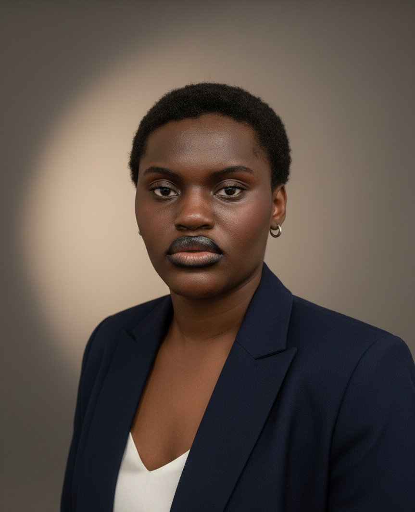

L'art et la création m'accompagnent depuis longtemps. Au collège, déjà, les cours d'arts plastiques m'ont donné le goût des projets visuels. À 15 ans, tout s'est précisé : j'ai utilisé mon premier appareil photo argentique. Les images n'étaient pas parfaites, mais c'était déjà une manière d'exprimer quelque chose. À partir de là, j'ai su que je voulais créer autrement : visuellement, sincèrement.
De fil en aiguille, j'ai pu construire un profil riche : Bac Pro Photo, Licence en Arts Plastiques, et aujourd'hui BUT MMI (Métiers du Multimédia et de l'Internet). Photographie, art, design, communication et développement web : rien n'est laissé au hasard. Chaque étape m'a permis de gagner en précision, en efficacité et surtout en vision.
Aucun projet n'est trop simple ou trop complexe. Ce qui compte pour moi, c'est de m'impliquer à 100 %, de comprendre les besoins, de proposer des idées claires et de produire un travail solide. Je m'adapte, j'apprends vite et je vais au bout des choses. Mon objectif reste le même : créer du sens, avec sérieux et créativité.
Le design, c'est là où tout se rejoint. C'est ce qui me permet de mettre en valeur mes idées et celles des autres. C'est là que je m'exprime le mieux. Grâce à mes bases artistiques et mes compétences techniques, je crée des projets qui marquent. C'est cette vision, cette énergie et cette polyvalence que je souhaite apporter à une équipe. Voilà pourquoi il faut travailler avec moi.